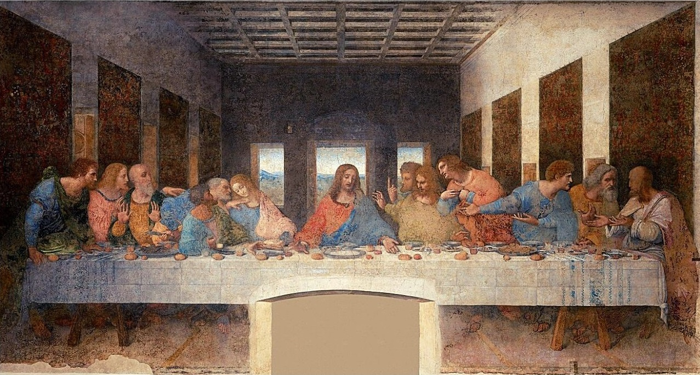
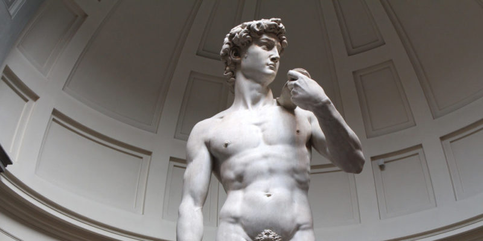
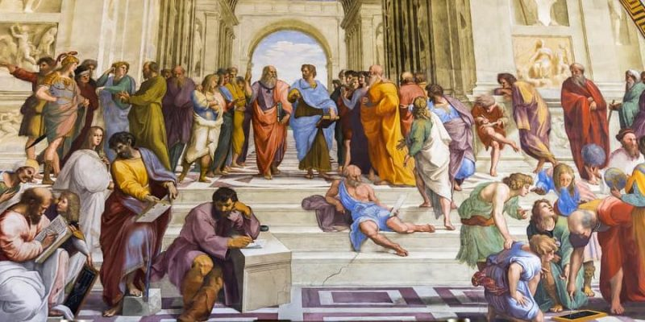

Arte en el Renacimiento
Introduccion al arte Renacentista
El arte renacentista marca el período de renacimiento cultural y artístico que tuvo lugar en Europa del siglo XIV al XVII, especialmente en Italia. Este período marcó un alejamiento de las formas medievales y un nuevo énfasis en los ideales clásicos de la antigua Grecia y Roma. Los artistas del Renacimiento intentaron representar con precisión la realidad desarrollando nuevas técnicas como la perspectiva, el realismo anatómico y el claroscuro. El movimiento celebró el humanismo poniendo a las personas y la experiencia humana en primer plano en su trabajo, creando obras que reflejaban tanto la belleza estética como el profundo conocimiento científico.
Evolucion del arte en el renacimiento
El Renacimiento fue un período de progreso cultural que comenzó en Italia y se extendió por toda Europa aproximadamente entre los siglos XIV y XVII. El movimiento estuvo marcado por un interés renovado en la antigüedad clásica en la filosofía y el arte, y marcó una ruptura con los estilos medievales dominados por el arte y el simbolismo religioso. Durante el Renacimiento, los artistas buscaron representar el mundo con mayor realismo y desarrollaron métodos innovadores para representar más fielmente la naturaleza y las personas.
tecnicas mas utilizadas
- Perspectiva lineal: Introducida por artistas como Filippo Brunelleschi, esta técnica permite representar un espacio tridimensional sobre una superficie bidimensional. Utilizando puntos de fuga, los artistas pudieron crear una ilusión de profundidad inaudita en ese momento.
- Realismo: los artistas del Renacimiento buscaron capturar la anatomía humana y los detalles ambientales con una precisión sin precedentes. Estudian anatomía, luces y sombras y crean obras más naturales y cercanas a la realidad.
- Claroscuro:Esta técnica implica el uso de luces y sombras contrastantes para dar volumen y profundidad a las figuras. Los artistas utilizan fuentes de luz para resaltar formas.
- Sfumato:Popularizado por Leonardo da Vinci, el sfumato es una técnica que consiste en aplicar capas muy finas de pintura para crear transiciones suaves entre colores y tonos y evitar bordes definidos. Especialmente útil para retratos y paisajes para crear un efecto atmosférico.
- Composición equilibrada:La simetría y la proporción, inspiradas en las obras de la Antigüedad clásica, fueron características clave del arte renacentista, donde se buscaba la armonía y el equilibrio en la disposición de las figuras y elementos en las pinturas y esculturas.
Artistas mas importantes
Leonardo da Vinci (1452-1519) Considerado el prototipo del "Hombre del Renacimiento" Leonardo fue pintor, inventor, científico y filósofo. Sus obras más famosas incluyen la Mona Lisa y La Última Cena, que son ejemplos de su hábil uso de la interpretación y la composición.
Miguel Ángel Buonarroti (1475-1564) Uno de los más grandes maestros del Renacimiento, conocido por sus habilidades como escultor, pintor y arquitecto. Sus obras más famosas incluyen la escultura de David y las pinturas del techo de la Capilla Sixtina, donde utilizó su increíble conocimiento del cuerpo humano para crear figuras vívidas y dinámicas.
Miguel Ángel Buonarroti (1475-1564) Uno de los más grandes maestros del Renacimiento conocido por sus habilidades como escultor, pintor y arquitecto. Sus obras más famosas incluyen la escultura de David y las pinturas del techo de la Capilla Sixtina donde utilizó su increíble conocimiento del cuerpo humano para crear figuras vívidas y dinámicas.
Obras destacadas
la Ultima cena
Ubicación: Convento de Santa Maria delle Grazie,Milán.
Esta pintura mural representa la última cena de Jesús con sus apóstoles
lLa Mona Lisa
.jpg)
Ubicación: Museo del Louvre, París.
Esta pintura al óleo es famosa por el enigmático rostro de la mujer retratada,
probablemente
Lisa Gherardini.
David
Ubicación: Galería de la Academia, Florencia.
Esta escultura de mármol de 5.17 metros es un símbolo del ideal renacentista de belleza
humana y perfección anatómica.
La Escuela de Atenas
Ubicación: Estancias de Rafael, Ciudad del Vaticano.
Este fresco es un homenaje a la filosofía clásica y representa a grandes pensadores como
Platón, Aristóteles y Sócrates en un entorno arquitectónico clásico.